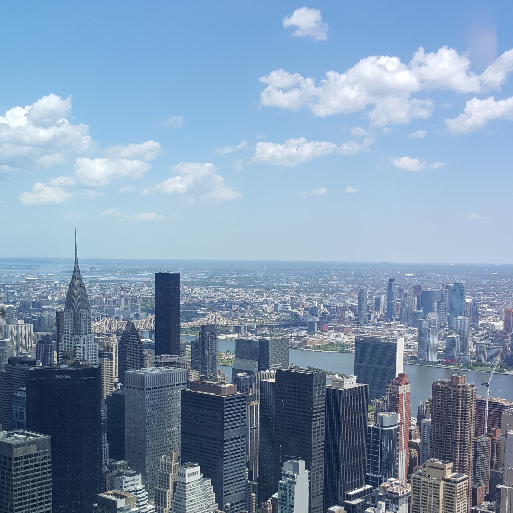
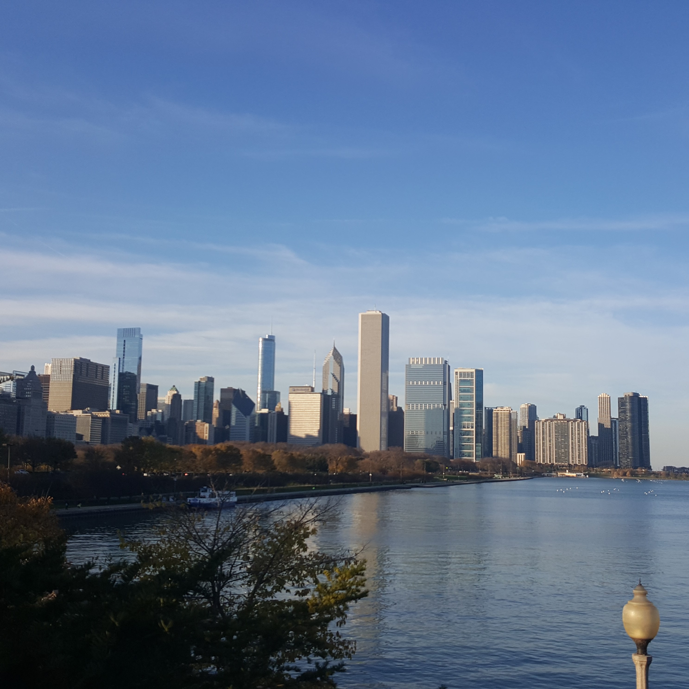

Travel Reccomendations

New York
The Big Apple, the city that never sleeps, the home of central perk.
Alicia Keys was bang on the money about New York,
this amazing city and an absolute must-see for the East Coast. We spent
5 days doing all the touristy things we could think of from going up the
empire state to eating bagels in central park. With an average of 25,000
steps a day its safe to say we burnt off the extra calories from
all the amazing food we ate ($1 pizza we miss you), walking the streets
we'd so often seen in the movies. New York is very
expensive as we were lucky enough to stay with a friend to save on accomodation,
but fear not, the underground subway system
is easy to navigate and cheap, so staying a bit further out isn't a problem

Boston
Rich in history, Boston is an incredible city to visit for those that find New York a bit on the busy side.
Visit the incredible institutions that are Harvard and MIT, or spend money you don't have at the boutiques down at the harbour.
Taking a trolley and boat tour are great ways of travelling in this city, and there
are plenty of opportunities to buy tickets in the city. Accomodation is hard to find and even
more difficult to afford, so we recommend booking well in advance!

Washington D.C
Whislt DC has been in the news a lot for a certain wotsit coloured man, there is so much more to see in the US's capital.
If politics isn't really your thing, then there are plenty of other places to go, including the famous
Smithsonian museums. If you'd seen any of the 'night at the museum' movies then you will know
that these museums are incredible, and the best thing of all, they're completely free.
With an abundance of landmarks, your camera rolls will be full of photos of you
next to some very pretty buildings (US Capitol building we're looking at you).

Philadelphia
Turns out there's a lot more to Philadelphia than the cheese. The home of the liberty bell,
Philadelphia has tonnes of history, influeneces from its large italian population, and of course the
famous Philly cheesesteak sandwhiches. Whilst not as big as some of
the other cities we visited, Philadelphia is a great place to visit if the busy hustle and bustle of
a city is not really your thing. With plenty of independent stores, and quirky neighbourhoods, Philadelphia and its
tasty sandwhiches will stay with us and our stomachs forever.

Chicago
When we wanted to escape the cornfields of Indiana, Chicago was the cloest city at only a short 3 hour (yes that's short in the US) bus ride away.
The windy city like most cities in the US, is filled with skyscrapers, designer stores and multiple photo opportunities.
If you don't go and take a photo next to the massive steel bean in Chicago, did you even go?
We visited during the St. Patricks day celebrations where the entire river is dyed green, something I didn't believe till
I was staring into water the colour of a green skittle. Chicago is famous for it's deep dish pizza
that, although very pricey, is worth the extra dollars. If dough, cheese and pure deliciousness is
something you're looking for, and lets be honest who isn't, then Chicago is a must!